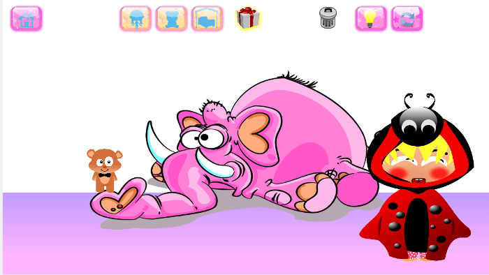
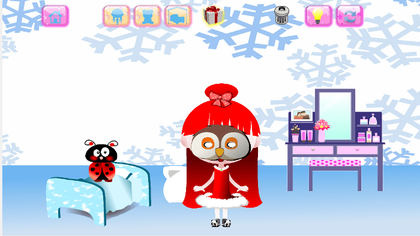

App Store
5.0
Store-Seite und Rezensionen ansehenKawaii & kreative Spiele · iOS
Ziehe Lili und ihren Teddybären an und dekoriere ihr Schlafzimmer mit Möbeln, Farben und Spielzeug.
Mehr erfahren ↓
Gestalte es nach deinen Ideen und kehre in dein gespeichertes Zimmer zurück. Lili’s Bedroom ist ein werbefreies Dekorationsspiel für iOS, auch offline spielbar.


5.0
Store-Seite und Rezensionen ansehenBewertungen werden je Store getrennt angezeigt und können je nach Land und Zeitpunkt abweichen.
Die offizielle Store-Seite zeigt Verfügbarkeit, Preise und unterstützte Spielsprachen.